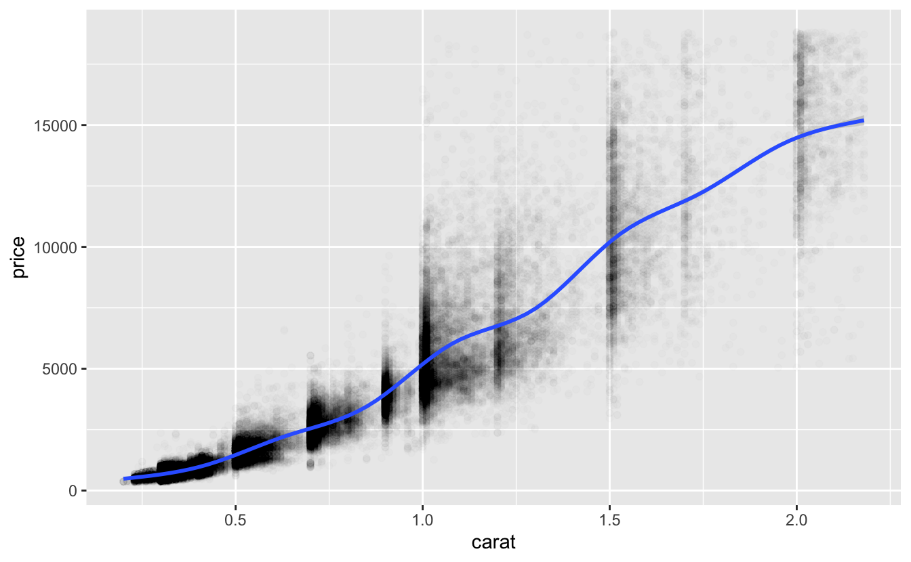
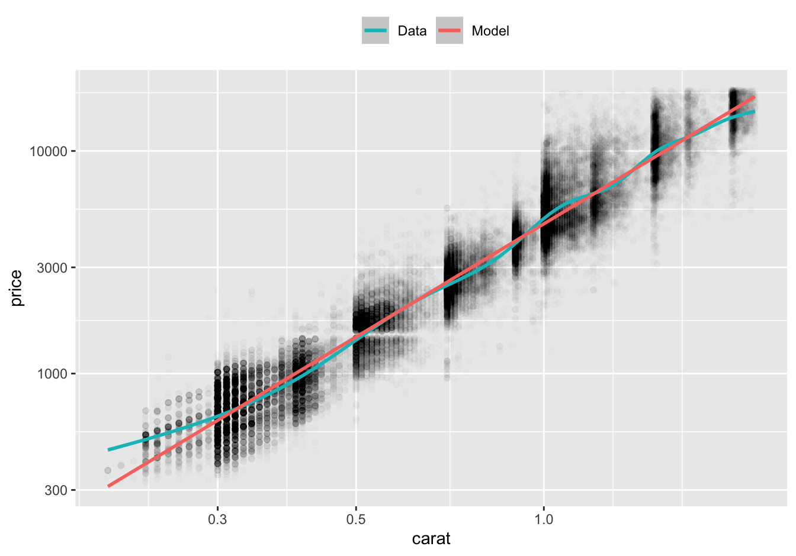
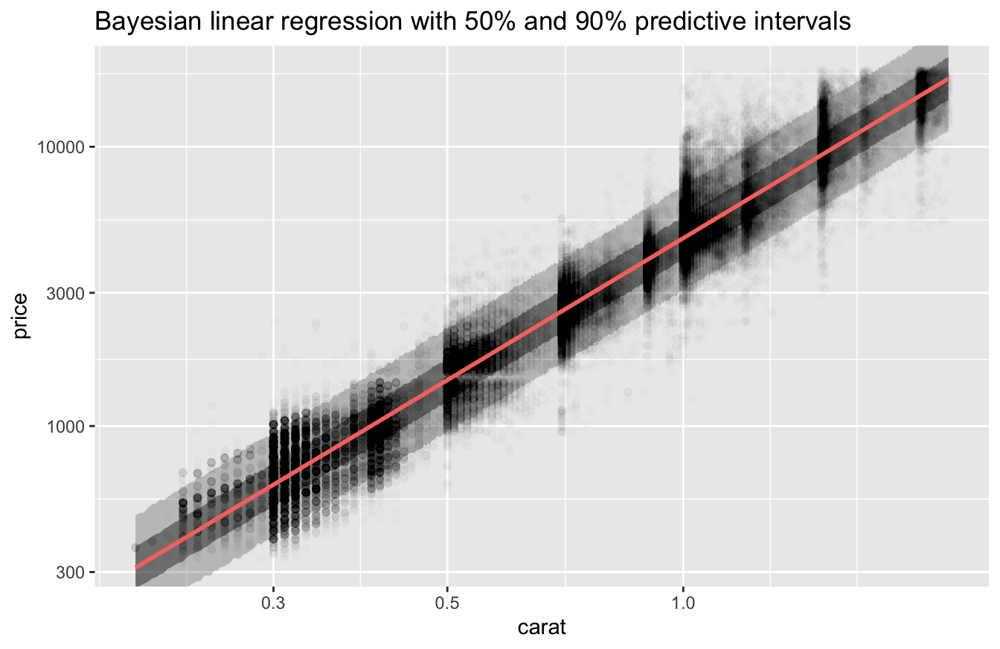
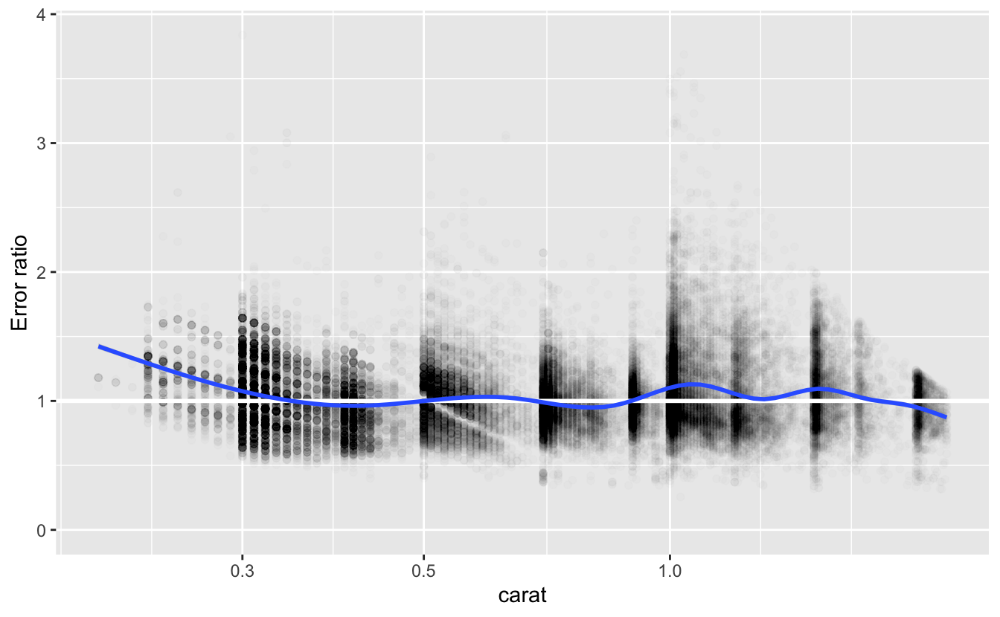

4 Fitting basics
library(tidyverse)
library(rstanarm)
library(tidymodels)
tidymodels_prefer()In Chapters 2 and 3, we used EDA to understand the diamonds dataset and to identify function families with which to model the relationship of price to the four Cs, carat, clarity, color, and cut. We’re now ready to fit models. To start, we’ll use the simplest function family we identified, the power law relationships for price vs. carat, which are expressed by the formula
log(price) ~ log(carat) .
In the next chapter, we’ll model this data with other function families and show you how to compare and evaluate different models.
We’ve made several modifications to the diamonds dataset over the past two chapters, including removing diamonds with impossible dimensions and filtering out very large diamonds. The following code repeats these manipulations and stores the result in a new tibble, df.
df <-
diamonds %>%
filter(x > 0, y > 0, z > 0) %>%
filter(y < 20, z < 10) %>%
filter(carat <= quantile(.$carat, probs = 0.99)) %>%
mutate(
color = fct_rev(color),
color_combined = fct_collapse(color, "DEFG" = c("D", "E", "F", "G"))
)Going forward, we’ll use df instead of diamonds.
4.1 Fitting a model
In Chapter 1, we discussed classical and Bayesian modeling. We’ll now show you how to actually fit classical and Bayesian models, both directly and with the tidymodels modeling framework.
4.1.1 Fitting a classical model
The R function lm() fits linear models using classical least squares. Here’s how to use it to fit a model with our function family and data.
fit_lm <- lm(log(price) ~ log(carat), data = df)You can learn about the fit by simply printing it.
fit_lm
#>
#> Call:
#> lm(formula = log(price) ~ log(carat), data = df)
#>
#> Coefficients:
#> (Intercept) log(carat)
#> 8.46 1.69You can extract the coefficients for the model with coef().
coef(fit_lm)
#> (Intercept) log(carat)
#> 8.46 1.694.1.2 Fitting a Bayesian model
Stan is a platform for statistical modeling, including Bayesian modeling. rstanarm is an “R package that emulates other R model-fitting functions but uses Stan … for the back-end estimation.”
stan_glm() is an rstanarm function that emulates the R function glm() to fit generalized linear models. Here’s how to use it to fit a model with our function family and data.
fit_stan_glm <-
stan_glm(log(price) ~ log(carat), data = df, refresh = 0, seed = 505)stan_glm() uses a probabilistic algorithm. If you wish, you can use the seed argument to set the starting point of the random number generator used by the algorithm so that it will return the same results every time it is called. The refresh = 0 argument suppresses information that the algorithm would otherwise print while it is running.
You can learn about the fit by simply printing it.
fit_stan_glm
#> stan_glm
#> family: gaussian [identity]
#> formula: log(price) ~ log(carat)
#> observations: 53405
#> predictors: 2
#> ------
#> Median MAD_SD
#> (Intercept) 8.5 0.0
#> log(carat) 1.7 0.0
#>
#> Auxiliary parameter(s):
#> Median MAD_SD
#> sigma 0.3 0.0
#>
#> ------
#> * For help interpreting the printed output see ?print.stanreg
#> * For info on the priors used see ?prior_summary.stanregBy default, this only prints one digit of precision. Here’s how you can print more.
print(fit_stan_glm, digits = 3)
#> stan_glm
#> family: gaussian [identity]
#> formula: log(price) ~ log(carat)
#> observations: 53405
#> predictors: 2
#> ------
#> Median MAD_SD
#> (Intercept) 8.457 0.001
#> log(carat) 1.688 0.002
#>
#> Auxiliary parameter(s):
#> Median MAD_SD
#> sigma 0.260 0.001
#>
#> ------
#> * For help interpreting the printed output see ?print.stanreg
#> * For info on the priors used see ?prior_summary.stanregThe parameter sigma is an estimate of the standard deviation of the residual distribution, which is assumed to be normal with mean 0. The MAD_SD column is the scaled median absolute deviation, which provides a robust measure of variation of the parameter distributions.
An advantage of Bayesian modeling is that it provides estimates not just of the values of the parameters, but also an estimate of their joint distribution through simulations. Here’s how you can access these simulations.
sims <-
as.data.frame(fit_stan_glm) %>%
as_tibble()By default, stan_glm() performs 4000 simulations from the joint distribution of parameters.
sims
#> # A tibble: 4,000 × 3
#> `(Intercept)` `log(carat)` sigma
#> <dbl> <dbl> <dbl>
#> 1 8.46 1.68 0.260
#> 2 8.46 1.69 0.262
#> 3 8.46 1.69 0.262
#> 4 8.46 1.69 0.261
#> 5 8.46 1.69 0.261
#> 6 8.46 1.69 0.261
#> # … with 3,994 more rowsThese simulations can be used to make inferences about the model, such as uncertainties in the parameters or in the model’s predictions.
You can extract the coefficients for the model with coef().
coef(fit_stan_glm)
#> (Intercept) log(carat)
#> 8.46 1.69The coefficients produced by lm() and stan_glm() are very close.
coef(fit_lm) - coef(fit_stan_glm)
#> (Intercept) log(carat)
#> -4.91e-05 -5.11e-054.1.3 Tidymodels
Tidymodels is an ecosystem of R packages for modeling. It provides a common interface to a growing number of model types and engines. And it supports a range of other modeling tasks, such as data preprocessing, resampling, and parameter tuning. You can learn more at Tidy Modeling with R.
Linear regression, the type of model we’ll be using here, is just one of several model types supported by tidymodels. Each type of model supported by tidymodels may have multiple computational engines. Here are the engines currently available for linear regression.
show_engines("linear_reg")
#> # A tibble: 7 × 2
#> engine mode
#> <chr> <chr>
#> 1 lm regression
#> 2 glm regression
#> 3 glmnet regression
#> 4 stan regression
#> 5 spark regression
#> 6 keras regression
#> # … with 1 more rowTidymodels provides a common interface for each type of model, so you don’t need to know the details and arguments for each computational engine. This makes it easier to model a dataset using different types of model, and using different computational engines for the same type of model.
Here’s how to fit our function family and data with tidymodels using lm().
fit_tm_lm <-
linear_reg() %>%
set_engine("lm") %>%
fit(log(price) ~ log(carat), data = df)
fit_tm_lm
#> parsnip model object
#>
#>
#> Call:
#> stats::lm(formula = log(price) ~ log(carat), data = data)
#>
#> Coefficients:
#> (Intercept) log(carat)
#> 8.46 1.69The tidymodels fit contains the lm() fit.
fit_tm_lm$fit
#>
#> Call:
#> stats::lm(formula = log(price) ~ log(carat), data = data)
#>
#> Coefficients:
#> (Intercept) log(carat)
#> 8.46 1.69Tidymodels uses stan_glm() to fit linear regressions with the stan engine. Here’s how to fit our function family and data with tidymodels using stan_glm().
fit_tm_stan <-
linear_reg() %>%
set_engine("stan", seed = 505) %>%
fit(log(price) ~ log(carat), data = df)The seed argument isn’t required. We used it so the results would match the direct call of stan_glm() above. With tidymodels, refresh = 0 is the default.
Here’s information about the fit.
fit_tm_stan
#> parsnip model object
#>
#> stan_glm
#> family: gaussian [identity]
#> formula: log(price) ~ log(carat)
#> observations: 53405
#> predictors: 2
#> ------
#> Median MAD_SD
#> (Intercept) 8.5 0.0
#> log(carat) 1.7 0.0
#>
#> Auxiliary parameter(s):
#> Median MAD_SD
#> sigma 0.3 0.0
#>
#> ------
#> * For help interpreting the printed output see ?print.stanreg
#> * For info on the priors used see ?prior_summary.stanregThe tidymodels fit contains the stan_glm() fit.
print(fit_tm_stan$fit, digits = 3)
#> stan_glm
#> family: gaussian [identity]
#> formula: log(price) ~ log(carat)
#> observations: 53405
#> predictors: 2
#> ------
#> Median MAD_SD
#> (Intercept) 8.457 0.001
#> log(carat) 1.688 0.002
#>
#> Auxiliary parameter(s):
#> Median MAD_SD
#> sigma 0.260 0.001
#>
#> ------
#> * For help interpreting the printed output see ?print.stanreg
#> * For info on the priors used see ?prior_summary.stanreg4.2 Checking a model
In the last chapter, we used EDA to find promising function families with which to model the diamonds dataset. We can now use EDA to check to see how well a model fits the data.
Here’s a plot of the data we’re modeling and a smooth line.
df %>%
ggplot(aes(carat, price)) +
geom_point(alpha = 0.01) +
geom_smooth()
Recall that the formula for our function family
log(price) ~ log(carat)
represents functions of the form
log(price) = a_0 + a_1 * log(carat)
for parameters a_0 and a_1.
From the coefficients we saw above, the algorithms chose the function
log(price) = 8.46 + 1.69 * log(carat)
or, after we apply exp() to both sides,
price = 4707 * carat^1.69 .
The smooth line above curves upward, indicating a growth in price that is greater than linear. The model exponent is 1.69. Since this is larger than 1, it likewise represents a growth greater than linear.
This function predicts that a one-carat diamond would have a price of about 4707. Here’s the distribution of actual prices of one-carat diamonds.
df %>%
filter(near(carat, 1)) %>%
pull(price) %>%
summary()
#> Min. 1st Qu. Median Mean 3rd Qu. Max.
#> 1681 4155 4864 5243 6079 16469As you can see from the plot and the summary, there is a wide variation in prices for one-carat diamonds, but the prediction is roughly comparable with the median and mean prices.
With no glaring problems with the parameters, we’ll next look at predictions across the full range of carat.
4.2.1 Making predictions
Once you’ve fit a model, you can use the fit to make predictions. Here’s how to use the predict() function to make predictions for the lm() and stan_glm() models.
preds <-
tibble(
carat = seq(min(df$carat), max(df$carat), length.out = 801),
pred_lm = predict(fit_lm, newdata = tibble(carat)) %>% exp(),
pred_stan_glm = predict(fit_stan_glm, newdata = tibble(carat)) %>% exp()
)
preds
#> # A tibble: 801 × 3
#> carat pred_lm pred_stan_glm
#> <dbl> <dbl> <dbl>
#> 1 0.2 311. 311.
#> 2 0.202 317. 317.
#> 3 0.205 324. 324.
#> 4 0.207 331. 331.
#> 5 0.210 337. 337.
#> 6 0.212 344. 344.
#> # … with 795 more rowsIn the tibble above, carat contains equally spaced values. We then use the newdata argument of predict() to make predictions at these values using the models. predict() makes predictions of log(price), since this was the response in the formula defining the model function family. We therefore use exp() to get predictions for price.
lm() is from the stats package, and stan_glm() is from the rstanarm package. These packages were written and are maintained by different people. You might wonder how the function predict() could make predictions for such very different models from these two different packages. It does this by taking advantage for R’s object-oriented functionality.
fit_lm is has class lm.
class(fit_lm)
#> [1] "lm"When predict() encounters a model of this class, it calls predict.lm() from the stats package.
fit_stan_glm has class stanreg.
class(fit_stan_glm)
#> [1] "stanreg" "glm" "lm"When predict() encounters a model of this class, it calls predict.stanreg() from the rstanarm package.
The tidymodels models fit_tm_lm and fit_tm_stan have class model_fit
class(fit_tm_lm)
#> [1] "_lm" "model_fit"
class(fit_tm_stan)
#> [1] "_stanreg" "model_fit"When predict() encounters a model of this class, it calls predict.model_fit() from the tidymodels parsnip package. We need to use slightly different arguments to make predictions with this function.
preds <-
preds %>%
mutate(
pred_tm_lm =
predict(fit_tm_lm, new_data = tibble(carat), type = "raw") %>% exp(),
pred_tm_stan =
predict(fit_tm_stan, new_data = tibble(carat), type = "raw") %>% exp()
)
preds
#> # A tibble: 801 × 5
#> carat pred_lm pred_stan_glm pred_tm_lm pred_tm_stan
#> <dbl> <dbl> <dbl> <dbl> <dbl>
#> 1 0.2 311. 311. 311. 311.
#> 2 0.202 317. 317. 317. 317.
#> 3 0.205 324. 324. 324. 324.
#> 4 0.207 331. 331. 331. 331.
#> 5 0.210 337. 337. 337. 337.
#> 6 0.212 344. 344. 344. 344.
#> # … with 795 more rowsThe predictions by the models created with tidymodels are exactly the same as those created directly with lm() and stan_glm().
preds %>%
summarize(
diff_lm = max(abs(pred_tm_lm - pred_lm)),
diff_stan_glm = max(abs(pred_tm_stan - pred_stan_glm))
)
#> # A tibble: 1 × 2
#> diff_lm diff_stan_glm
#> <dbl> <dbl>
#> 1 0 0And the predictions by the models created by directly lm() and stan_glm() are very close.
v <-
preds %>%
summarize(
rel_max = max(abs(pred_stan_glm - pred_lm) / pmin(pred_stan_glm, pred_lm))
)
v
#> # A tibble: 1 × 1
#> rel_max
#> <dbl>
#> 1 0.0000659The predictions are always within 0.0066% of each other.
Since the predictions of the different models are all very close, in the following we will only check the fit of stan_glm().
4.2.2 Checking predictions
Recall from Chapter 3 that log-log plots are an effective way to plot data from a power law. On a log-log plot, a power law function is linear.
Here’s our data on a log-log plot with a smooth line and our model’s predictions.
df %>%
ggplot(aes(carat, price)) +
geom_point(alpha = 0.01) +
geom_smooth(aes(color = "Data")) +
geom_line(aes(y = pred_stan_glm, color = "Model"), data = preds, size = 1) +
scale_x_log10() +
scale_y_log10() +
scale_color_discrete(direction = -1) +
theme(legend.position = "top") +
labs(color = NULL)
For diamonds greater than or equal to 0.3 carat in size, the model predictions are very close to the smooth line. For diamonds smaller than 0.3 carat, the actual prices of diamonds are greater than the prices predicted by the model. However, there are relatively few diamonds of this size.
Since stan_glm() is a Bayesian model, we can plot estimates of the uncertainty in its predictions.
predictive_intervals <- function(.data, fit, probs = c(0.5, 0.9)) {
.data %>%
mutate(.pred = predict(fit, newdata = .)) %>%
bind_cols(
map_dfc(
probs,
~ predictive_interval(fit, prob = ., newdata = .data) %>%
as_tibble()
)
)
}
v <-
tibble(carat = seq(min(df$carat), max(df$carat), length.out = 801)) %>%
predictive_intervals(fit = fit_stan_glm) %>%
mutate(across(!carat, exp))
v %>%
ggplot(aes(carat)) +
geom_ribbon(aes(ymin = `5%`, ymax = `95%`), alpha = 0.25) +
geom_ribbon(aes(ymin = `25%`, ymax = `75%`), alpha = 0.5) +
geom_point(aes(y = price), data = df, alpha = 0.01) +
geom_line(aes(y = .pred), color = "#f8766d", size = 1) +
coord_cartesian(ylim = c(min(df$price), max(df$price))) +
scale_x_log10() +
scale_y_log10() +
labs(
title = "Bayesian linear regression with 50% and 90% predictive intervals"
)
The 90% predictive interval contains the bulk of the data.
With no major discrepancies between the model’s predictions and the data, we’ll now turn to a more sophisticated technique from EDA – checking the model’s residuals.
4.2.3 Checking residuals
We encountered residuals in Chapter 1. For a point in a dataset, the residual at that point is the true value of the response variable minus the value predicted using the corresponding predictor variable(s).
Our formula uses logs, so the residual for a logged response is
log(price) - log(predicted price)
or equivalently
log(price / predicted price) .
Applying exp() to this residual turns an additive error into a multiplicative error. This is the natural way to study error for a power law, where the range of the response variable can vary greatly. For example, in our dataset price ranges from $326 to $18,818. We will therefore examine the ratio
price / predicted price .
If we call the predict() function without specifying new data, it will return the predictions for the dataset used to fit the model.
v <-
df %>%
select(price, carat) %>%
mutate(
pred = predict(fit_stan_glm) %>% exp(),
error_ratio = price / pred
)
v
#> # A tibble: 53,405 × 4
#> price carat pred error_ratio
#> <int> <dbl> <dbl> <dbl>
#> 1 326 0.23 394. 0.828
#> 2 326 0.21 338. 0.965
#> 3 327 0.23 394. 0.831
#> 4 334 0.29 582. 0.574
#> 5 335 0.31 652. 0.514
#> 6 336 0.24 423. 0.794
#> # … with 53,399 more rowsLet’s look at a plot of the error ratios.
v %>%
ggplot(aes(carat, error_ratio)) +
geom_point(alpha = 0.01) +
geom_hline(yintercept = 1, size = 1, color = "white") +
geom_smooth() +
coord_cartesian(ylim = c(0, NA)) +
scale_x_log10() +
labs(y = "Error ratio")
As we saw above, the actual prices of the diamonds were more expensive than the model’s predictions for those with size less that 0.3 carat. In addition, we can now see that diamonds around 1.0 and 1.5 carats were also more expensive than predicted. Nevertheless, the smooth line for error_ratio is remains fairly close to 1 for diamonds of size 0.3 carat and greater. A systematic divergence from this line would indicate a problem with the fit.
Let’s look at the distribution of error_ratio.
quantile(v$error_ratio, probs = c(0.025, 0.05, 0.5, 0.95, 0.975))
#> 2.5% 5% 50% 95% 97.5%
#> 0.614 0.662 0.994 1.538 1.681The median error_ratio is very close to 1. Approximately 95% of the diamonds are within the range of 39% less and 68% more than the predictions.
4.3 Summary
The process of fitting classical and Bayesian models is similar. Bayesian models have the advantage of enabling additional inferences about the model, such as uncertainties in the parameters or the model’s predictions. Tidymodels provides a common interface to a wide range of model types and engines, as well as other tools for the modeling process.
Once we have fit a model, we can check the fit by:
- Checking the model parameters against known features of the data.
- Checking the predictions of the model against the actual values of the response variable in the data.
- Checking the residuals to see if their smooth line is largely horizontal.
These checks only indicate how well the model fits the data. They are not an indication of how well the model would make predictions with new data. We will turn to that question in the next chapter, as well as the issue of how to evaluate and compare models from different function families.